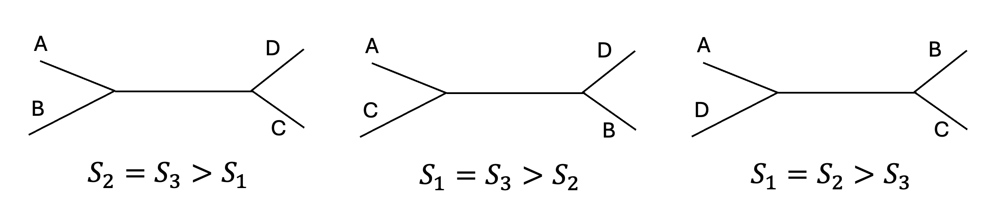
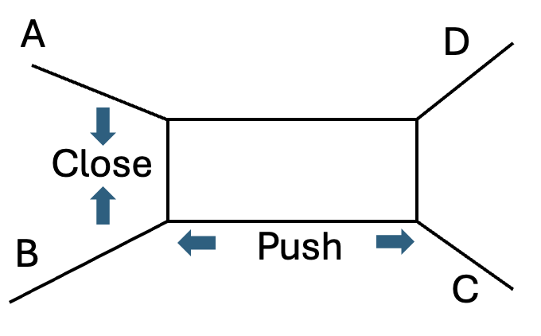

Buneman’s theorem (1971) states that for
any four leaves A, B, C, D, the three distance sums
\(S_1=d_{AB}+d_{CD}\), \(S_2=d_{AC}+d_{BD}\),
\(S_3=d_{AD}+d_{BC}\) satisfy:
exactly two of them match and both exceed the remaining
one
(right diagram). This law
both detects additivity and uniquely determines the unrooted
quartet topology.

In CellTreeQM, we turn the theorem into a loss:
\(L_\text{close}=|S_1-S_2|\) forces the two largest sums to
coincide, while
\(L_\text{push}=\bigl[S_3-\tfrac{S_1+S_2}{2}+m_0\bigr]_+\)
keeps the smallest sum sufficiently lower. Minimising
\(L_\text{additivity}=L_\text{close}+L_\text{push}\)
encourages the latent space to respect tree geometry even when
the full lineage is unknown.

This figure illustrates the geometric intuition of the loss.
When additivity is violated, the structure of a quartet can be
imagined as a “box” with an extra edge. The \(L_\text{close}\)
term encourages the top two distance sums to become more
similar, thereby reducing the imbalance that creates the
box-like distortion. In effect, it ensures that the box is not
“fat”. Meanwhile, the \(L_\text{push}\) term increases the gap
between the smallest sum and the average of the top two,
effectively “widening the bridge.” This widening enhances the
tree model’s robustness to noise and distortions from the
ideal tree structure.